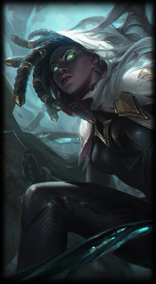

Senna
the Redeemer
Class :
Marksman, Support
Lore :
Cursed from childhood to be haunted by the supernatural Black Mist, Senna joined a sacred order known as the Sentinels of Light, and fiercely fought back—only to be killed, her soul imprisoned in a lantern by the cruel wraith Thresh. But refusing to lose hope, within the lantern Senna learned to use the Mist, and reemerged to new life, forever changed. Now wielding darkness along with light, Senna seeks to end the Black Mist by turning it against itself—with every blast of her relic weapon, redeeming the souls lost within.
Stats :
| Health | Health per level | Mana | Mana per level | Movement speed | Armor | Armor per level | MR | MR per level | Range | HP regen | HP regen per level | Mana regen | Mana regen per level | Crit | Crit per level | AD | AD per level | AS per level | AS |
|---|---|---|---|---|---|---|---|---|---|---|---|---|---|---|---|---|---|---|---|
| 520 | 75 | 350 | 45 | 330 | 28 | 3.5 | 30 | 0.5 | 600 | 3.5 | 0.55 | 11.5 | 0.4 | 0 | 0 | 50 | 0 | 4 | 0.625 |

Passive : Absolution
When units die near Senna, their souls are periodically trapped by the Black Mist. Senna can attack these souls to free them, absorbing the Mist that held them in death. Mist fuels her Relic Cannon's power with increased Attack Damage, Attack Range, and Critical Strike Chance. <br><br>Attacks from Senna's Relic Cannon take longer to fire, deals bonus damage , and briefly grant her a portion of her target's Movement Speed.